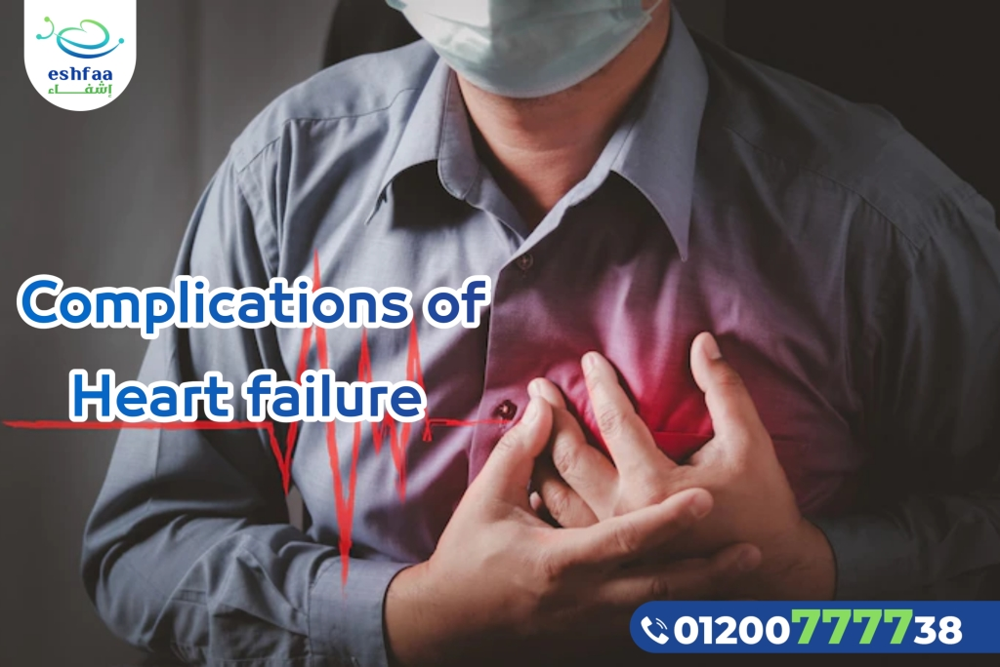
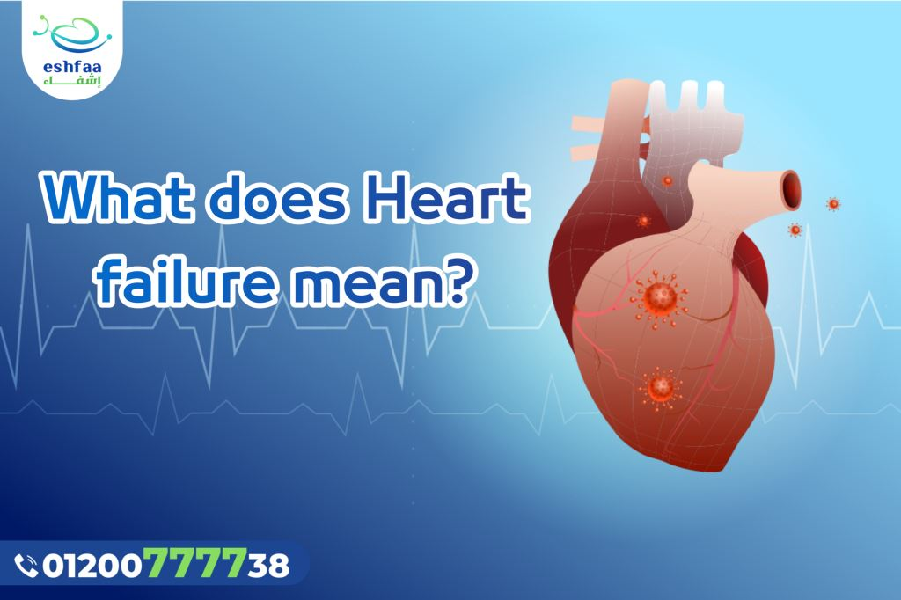
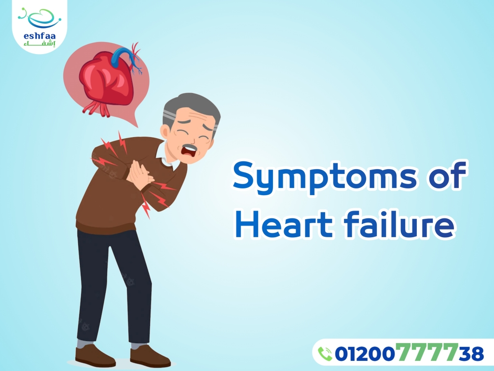
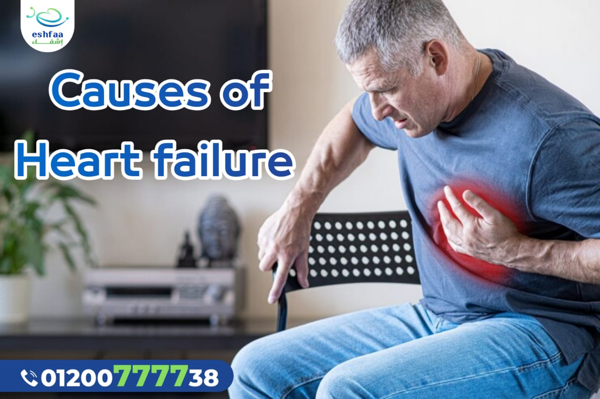
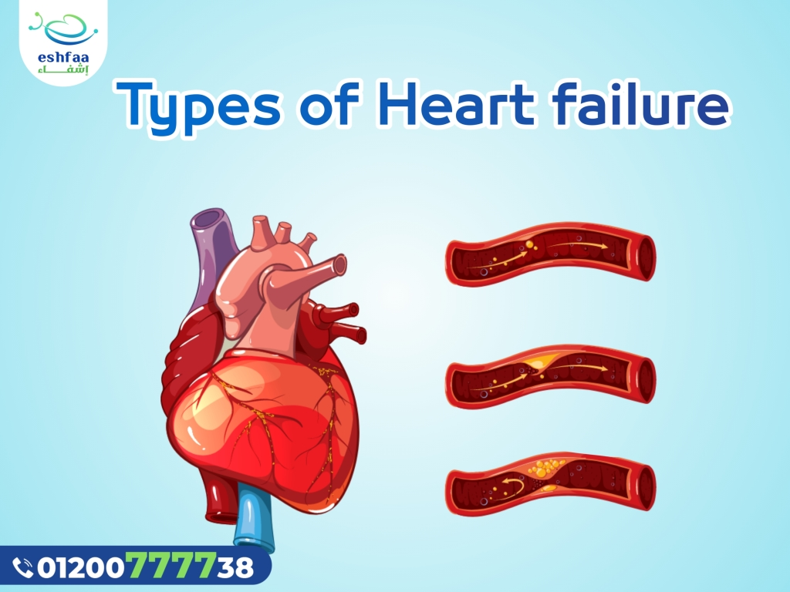
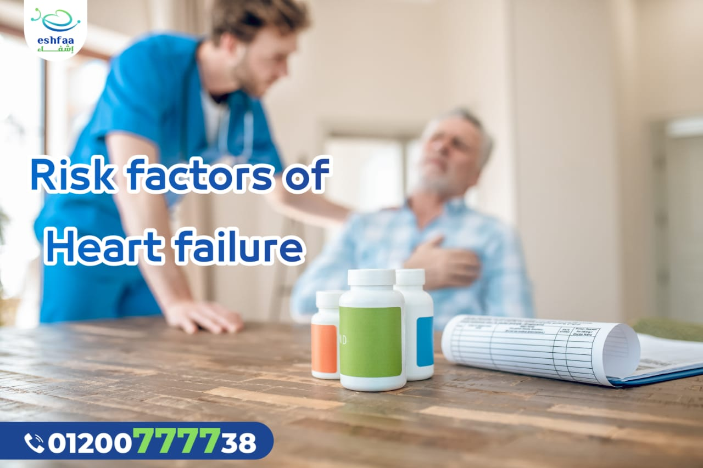
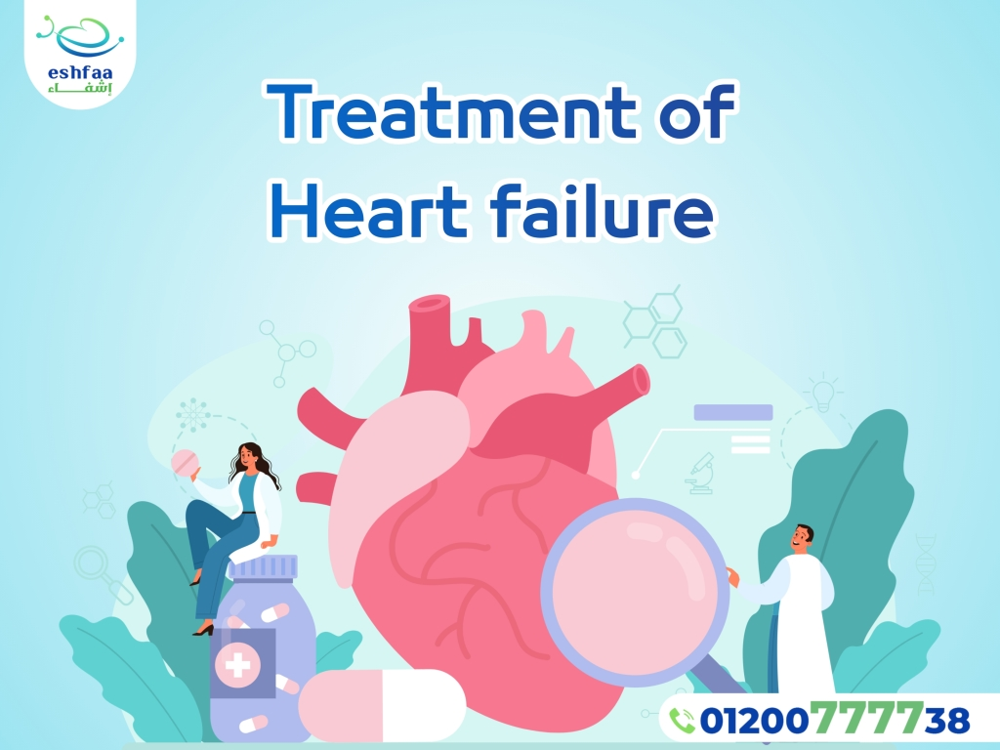
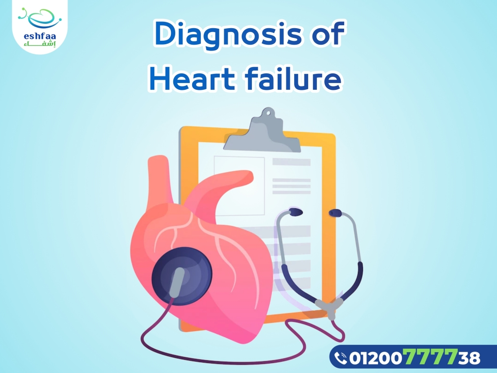
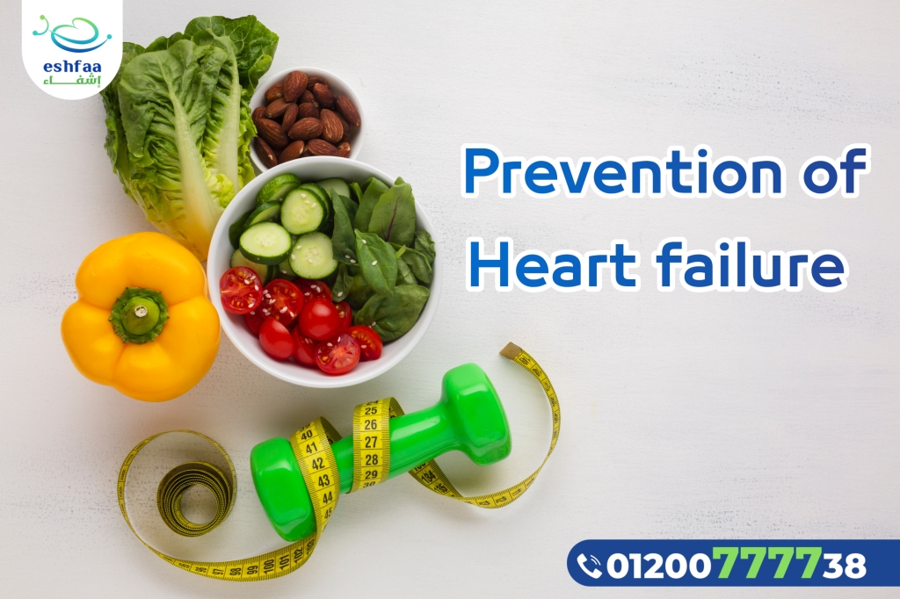

Heart failure
Heart failure does not mean that the heart is not working anymore, but it needs some help to function better, it is usually a chronic disease whose symptoms do not cure but can be controlled for many years, especially if it is detected early and the appropriate treatment plan is followed, this reduces complications and increases the level of improvement.
What does Heart Failure mean?

For some reason, the heart becomes unable to pump the adequate amount of blood to the rest of
the body, so the blood accumulates in the heart chambers and retreats from it to accumulate
inside the lungs, causing many health problems.
Also, the rest of the body’s organs are affected, because the blood is its way to obtain the
oxygen which is necessary to complete its vital functions.
All of this happens either as a result of weaking of the heart muscle becoming unable to
contract to pump blood normally, or it has become more stiff and cannot relax to allow the
heart chambers to be filled with blood.
Heart failure can occur only on the right side of the heart , on the left side, or both.
Heart failure may be a chronic disease whose symptoms remain in the long term, and this
represents most cases. It can also occur suddenly and acutely as a result of a heart attack or
the heart valves diseases, in this case, symptoms usually improve in a short time.
Symptoms of Heart Failure

- Sudden weight gain due to fluid accumulation in the body
- Loss of appetite
- Chronic cough
- Arrhythmias and increased heart rate
- Abdominal swelling
- Legs and Feet swelling
- Protruding neck veins
- Shortness of breath
- Inability to breathe well when lying down
- Use more than one pillow during sleep to improve breathing
Causes of Heart Failure

Heart failure is usually happens as a result of another disease that causes the heart to be
unable to perform its normal function, and the most common disease is coronary artery disease,
which causes narrowing of the arteries that supply the heart with blood and oxygen, and this
occurs as a result of the accumulation of fatty deposits in the arteries and lead to lack of
blood flow Blood to the heart and may lead to a heart attack if a complete blockage of the
coronary artery occurs.
There are many other reasons such as:
- Congenital heart diseases
- Valvular heart disease
Healthy heart valves keep blood flowing in the right direction, and when any damage occurs to them, that increase load on the heart and needs to work harder, which will lead to its weakness. - Damage to the heart muscle
As a result of many causes such as infection, alcohol abuse , and some types of cancer treatments such as chemotherapy. - Myocarditis
- Myocardial hypertrophy
- Arrhythmia
- Hypertension
This causes the heart to work harder to pump blood to the body and over time the heart muscle becomes weaker or stiffer and unable to function. - Diabetes
- HIV infection
- Severe anemia
- Excessive weight gain
- Hyperthyroidism
Types of Heart Failure

Heart failure can occur on the right side of the heart, the left side, or both.
We will also learn about systolic and diastolic heart failure.
1. Left sided Heart failure
It is the most common type of heart failure , the left ventricle, located in the lower part of
the left side of the heart, is responsible for pumping oxygenated blood into the body.
Left-sided heart failure occurs when the left ventricle is unable to adequately pump blood, so
blood backs up and accumulates in the lungs, causing difficulty breathing and fluid buildup in
the body.
2. Right sided heart failure
The right ventricle is responsible for pumping deoxygenated blood from the heart to the lungs
where gas exchange occurs and is blood is loaded with oxygen,
Right sided heart failure occurs when the right ventricle becomes unable to perform its
function.
It usually occurs as a result of failure of the left side of the heart muscle and fluid
buildup in the lungs, which impairs the right ventricle's ability to pump blood to the lungs
and makes it more difficult.
In this case, fluids refluxe to the abdomen, feet, and legs, causing swelling.
3. Systolic heart failure
It occurs when the heart muscle becomes weak and loses its ability to contract to pump blood
to the body, and this type is more common in men than women.
4. Diastolic heart failure
In this case, the heart muscle becomes more stiff than normal as a result of other diseases
that affect the heart, and the heart loses its ability to relax to be filled with blood, which
leads to a lack of blood supply to the rest of the body, and it is more common in women.
Risk factors of Heart Failure

Heart failure can happen to anyone, but there are some diseases that increase your risk:
- Hypertension
- Diabetes
- Coronary artery disease
- Valvular heart disease
- Anemia
- Hyperthyroidis
- Hypothyroidism
Also some negative lifestyle behaviors such as:
- Smoking
- Diet full of fat and cholesterol
- Excessive weight gain
- Laziness and lack of exercise
Treatment of Heart Failure

The doctor begins with taking the patient's medical history and then begins the clinical
examination, checking for signs of heart failure, such as arrhythmias, swelling of the feet
and legs, and protruding neck veins.
After that, the doctor orders some medical tests to confirm the diagnosis, such as:
1. Echocardiogram
It is the most effictive test for diagnosing heart failure, and it uses waves that give a
complete picture of the heart, allowing the doctor to know the damage in the heart, and
through it also knows the systolic and diastolic capacity of the heart.
2 .Chest x-ray
3. ECG
4. MRI of the heart
5. An nuclear scan on the heart
6. Diagnostic catheterization of the heart
7. Stress test
It is a test to measure heart function during exertion.
8. Blood cholesterol
9. Measuring the level of some peptides in the blood which could be an indicator of heart
failure (BNP blood test)
Diagnoses of Heart Failure

Heart failure is a chronic disease that requires a lifelong treatment. The treatment plan
depends on the severity of the condition and the type of heart failure.
Early detection of the disease and initiation of appropriate treatment greatly improves
symptoms and reduces expected complications, follow-up and repeat examinations regularly every
three to six months are also important.
The treatment plan includes one or more of the following types of treatments:
1. Medical treatment
It can be used in the treatment plan in the early stages of the disease to relieve symptoms
and prevent the complications, because:
- It improves the ability of the heart to pump blood.
- Reduces blood clots.
- It regulates the heart rate.
- Reduces the level of cholesterol in the blood.
- reduces the level of sodium in the blood and increases the level of potassium.
2. Surgical treatment
In some cases, surgical intervention is needed, to replace heart valves, coronary arteries
surgery, or implant pacemakers and implantable defibrillators.
In some cases, all previous treatment methods may fail, so the heart transplant being an
option,
but the operation is not suitable for everyone, and the patient will be evaluated first to see
if the operation is a safe option or not.
Complications of Heart Failure
Heart failure can lead to many health problems if the appropriate treatment plan is not followed:
- Stroke or heart attack.
- Renal failure.
- Arrhythmia.
- Blood clots.
- Liver damage.
Prevention of Heart Failure
Following a healthy lifestyle helps prevent heart disease and prevent complications.
- Maintain a moderate weight
- Exercise
- Reducing salt in food
- Reducing fats in food
- Stop Smoking